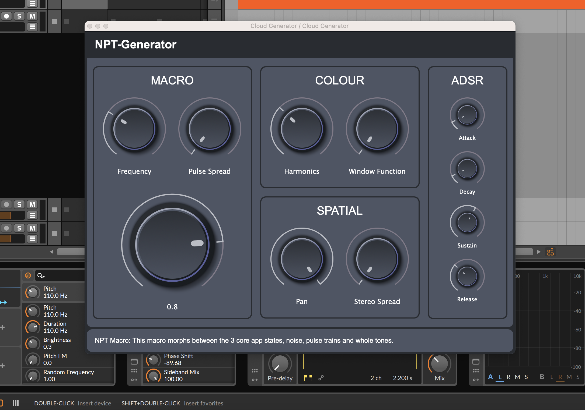

NPT Generator
Project Description
The noise, pulse, tone generator is a sound source that partially implements trainlet synthesis as described in Microsound by Curtis Roads. It is deployed as a VST plugin to be used inside host environments such as Ableton and Bitwig.
Features and Functionality
At its core the plugin is an impulse generator. The trainlet synthesiser focuses on pulse density, timbre and spatialization parameters. Incoming MIDI notes trigger an envelope which is applied to the amplitude of the trainlet output, initiating a pulse train at the pitch specified by the pitch parameter. Spatial position is primarily controlled by a pan parameter. Some degree of randomisation can be introduced with the stereo spread parameter, allowing for each pulse to have its own position in the stereo field. Pulse rate is controlled (amongst other things) by a macro parameter. Timbral variety is achieved with an additive synthesis approach coupled with a set of 3 window functions, which the user can smoothly morph between, with one parameter.
In one deviation from the trainlet synthesis approach described in Microsound, the user is offered 3 core app states, noise, pulse trains and whole tones, which are navigated with the macro parameter. The noise is created by dense, frequency modulated pulse trains and the whole tones are created by pulse trains that have a zero or small duration between each pulse, so that the pulse train is experienced as a continuous tone. This is a shortcut to offering a larger sonic palette.
Technical Overview
The app is implemented in the JUCE framework allowing different systems to be easily targeted. The UI is implemented using the JUCE draw routines and a set of custom classes that act as a design system.
DSP code is implemented in C++ in a separate custom package. Each DSP unit (for example envelope, pan function or oscillator) is broken down into its own class for maximum portability and transparency. This approach was influenced by the Mutable Instruments Plaits project.
In terms of voicing, there are 4 trainlet voices that typically play back simultaneously but pulse duration can be randomly offset to create a denser and more chaotic timbres. Each voice is implemented as a digitally controlled oscillator that uses a pre-calculated wavetable to generate a pulse with the appropriate harmonic content. Each pulse consists of a fundamental with 14 additional harmonics. The relative influence of the harmonics is determined by a parameter and a window function is applied to each pulse for additional timbral control. Linear interpolation is used on the wavetable to minimise artefacts during playback.